ご一緒に朝寝はいかが？ [梅吉]
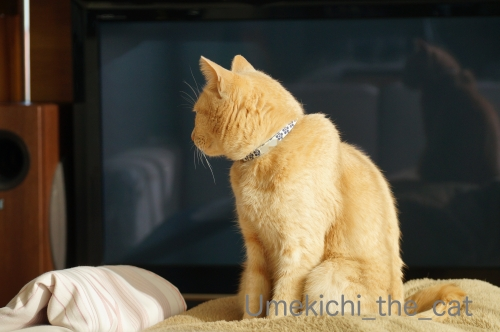
![[猫]](https://blog.ss-blog.jp/_images_e/101.gif) ひだりみてー
ひだりみてー
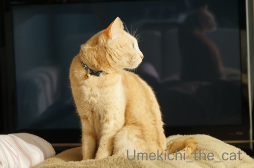
みぎみてー
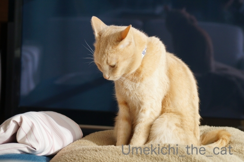
どないしよ
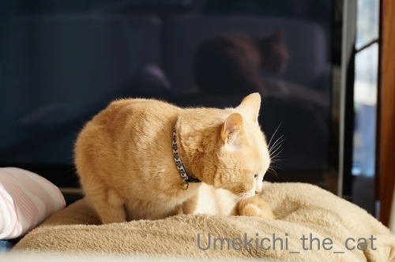
ねよw おひさんがぬくいわぁ
という朝8時。
こんなん見ていると脱力しかありません (⌒-⌒;
一緒に朝寝？流石にしたことはありませんよ。してみたいなー！！
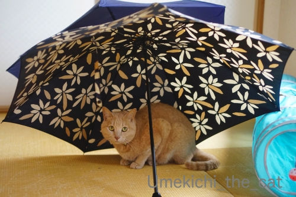
雨上がりの翌日はこんな感じw
＊＊＊＊＊＊＊＊＊＊＊＊＊＊＊＊＊＊＊＊＊＊＊＊＊＊＊＊＊＊＊＊＊＊＊＊＊
おっとが今月２日（今日ですね）から２週間テレワークになりました。
もちろん新型コロナウィルスの感染対策措置です。
通勤手段や職場の立地からみてウィルスをもらってくる確率が断然高いのはのはおっとだな、
と思っていたのでしばしの間ホッと出来そう。
で、テレワークってずーっとお家にいるのでお休みと感じてしまいそうw
本人も「メリハリつけるのが大変そうだ・・・」と呟いております。
とりあえずお昼にビールは飲まない様にって釘は刺しておきました(⌒-⌒;
あとはweb会議に梅吉が参加しない様にも気を付けなければwwwww
私は毎日のお昼ご飯の用意をどうしようと悩めるおばちゃんです。。。
 ↑ガブッと一押し↑
↑ガブッと一押し↑
先週末はサントリーの山崎蒸溜所ツアー予定でしたが中止になってしまった。
京都に行くならばと抱き合わせで予定していたのが梅見。
「こんな時」ではありますがあえて梅見には出かけることにしました。
で、「こんな時」なので公共交通機関は使わずに車を借りた。
我が家は７年前からカーシェアを利用しています。
家の近くにステーションがいくつもあるので車種も選び放題w
今回は消毒用のアルコールスプレーを持参して乗る前に車のあちこちをがっつり消毒。
なるべく人と接触する機会を少なくしたかったので朝早く出かけました。
ウロウロしなくて済む様に行く先の駐車スペースもネットで予約。
カード決済なのでお金の出し入れも人とのやりとりもなしです。
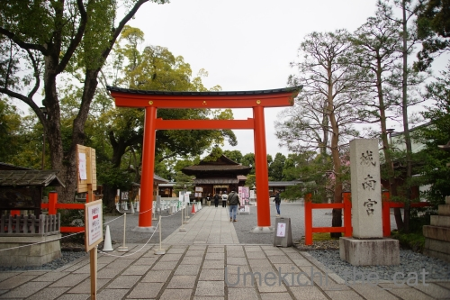
出かけたのは京都伏見区にある城南宮。
八千矛神（大国主命）息長帯日売尊（神功皇后）国常立尊（ややこやしいので割愛w）
を合祀して「城南大神」として祀る神社です。
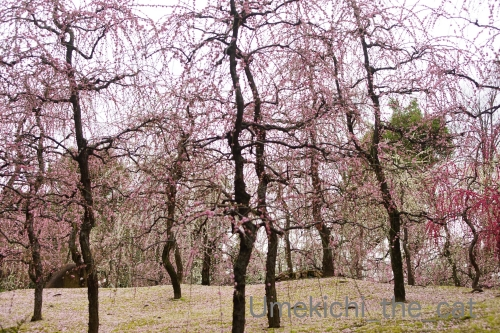
ここのお庭は枝垂れ梅が
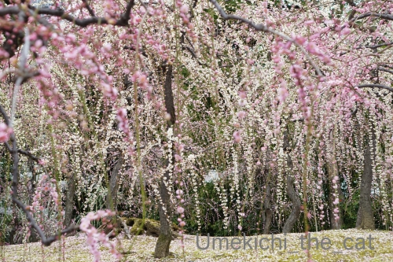
降る様に咲いています。
花は終わりかけていたのですがこれだけの数で押し切られると
終わりかけな感じは全然しませんでした。
ときどきひらひらと散っていく花びらがキレイ！！
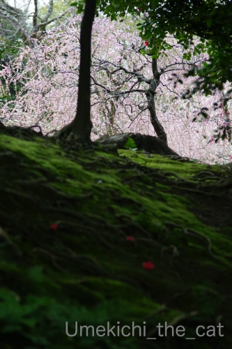
京都というところは苔が美しく生えるところで・・・・・
良く手入れされた苔むす築山はまるで「もののけ姫」のワンシーンの様でした。
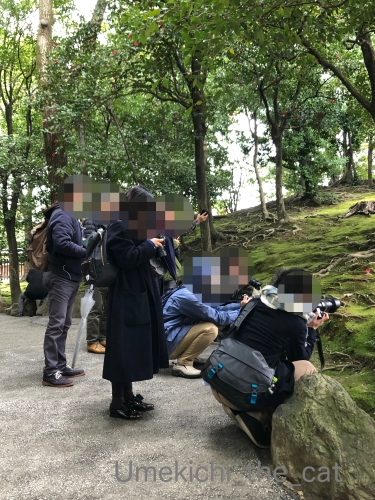
この築山の一角に群がるカメラを抱えた人々。
この中におっともいますよw
皆さんのレンズの向こうに見えていたのは
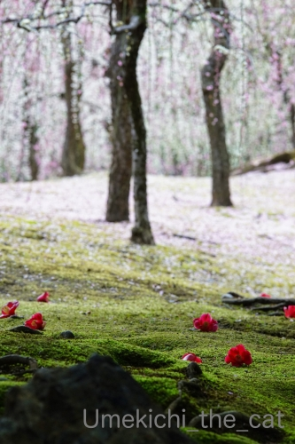
こんな光景。
散り落ちた椿のむこうに広がる枝垂れ梅の木々。
桜に負けない華やかな梅、堪能しました！！
例年梅が咲いている間は大混雑と聞きますが
この日は付属の駐車場もガラガラ。
庭園内はそれなりに人はいましたが静かに梅を鑑賞できましたよ。
ちょっと悩みましたがこの地区でもう一ヶ所行ってみたいところにも向かいました。
もしかしてあそこ？と思った方、多分正解。
伏見区といえばあそこ、ですよね。
次回に続きます！
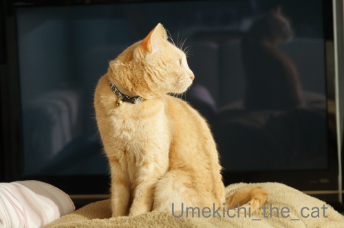
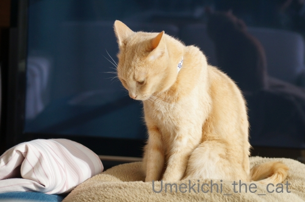
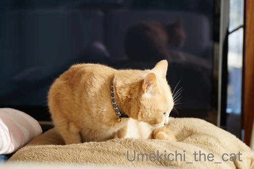
という朝8時。
こんなん見ていると脱力しかありません (⌒-⌒;
一緒に朝寝？流石にしたことはありませんよ。してみたいなー！！
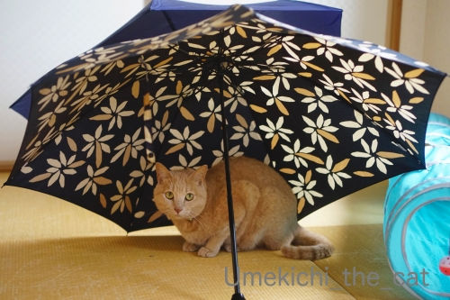
雨上がりの翌日はこんな感じw
＊＊＊＊＊＊＊＊＊＊＊＊＊＊＊＊＊＊＊＊＊＊＊＊＊＊＊＊＊＊＊＊＊＊＊＊＊
おっとが今月２日（今日ですね）から２週間テレワークになりました。
もちろん新型コロナウィルスの感染対策措置です。
通勤手段や職場の立地からみてウィルスをもらってくる確率が断然高いのはのはおっとだな、
と思っていたのでしばしの間ホッと出来そう。
で、テレワークってずーっとお家にいるのでお休みと感じてしまいそうw
本人も「メリハリつけるのが大変そうだ・・・」と呟いております。
とりあえずお昼にビールは飲まない様にって釘は刺しておきました(⌒-⌒;
あとはweb会議に梅吉が参加しない様にも気を付けなければwwwww
私は毎日のお昼ご飯の用意をどうしようと悩めるおばちゃんです。。。
先週末はサントリーの山崎蒸溜所ツアー予定でしたが中止になってしまった。
京都に行くならばと抱き合わせで予定していたのが梅見。
「こんな時」ではありますがあえて梅見には出かけることにしました。
で、「こんな時」なので公共交通機関は使わずに車を借りた。
我が家は７年前からカーシェアを利用しています。
家の近くにステーションがいくつもあるので車種も選び放題w
今回は消毒用のアルコールスプレーを持参して乗る前に車のあちこちをがっつり消毒。
なるべく人と接触する機会を少なくしたかったので朝早く出かけました。
ウロウロしなくて済む様に行く先の駐車スペースもネットで予約。
カード決済なのでお金の出し入れも人とのやりとりもなしです。
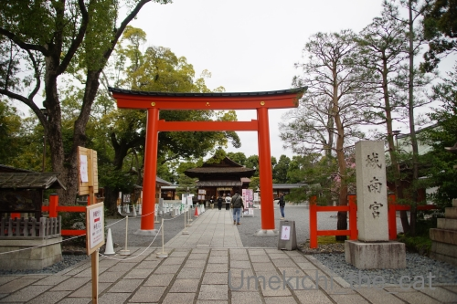
出かけたのは京都伏見区にある城南宮。
八千矛神（大国主命）息長帯日売尊（神功皇后）国常立尊（ややこやしいので割愛w）
を合祀して「城南大神」として祀る神社です。
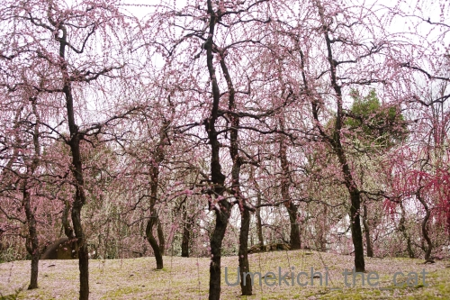
ここのお庭は枝垂れ梅が
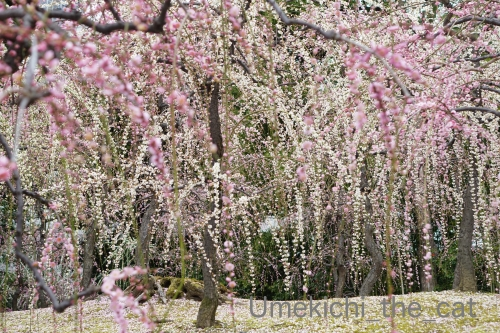
降る様に咲いています。
花は終わりかけていたのですがこれだけの数で押し切られると
終わりかけな感じは全然しませんでした。
ときどきひらひらと散っていく花びらがキレイ！！
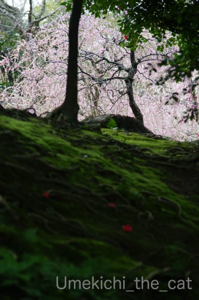
京都というところは苔が美しく生えるところで・・・・・
良く手入れされた苔むす築山はまるで「もののけ姫」のワンシーンの様でした。
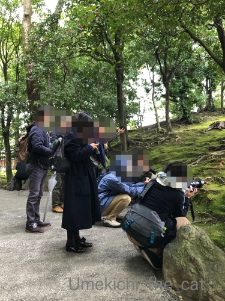
この築山の一角に群がるカメラを抱えた人々。
この中におっともいますよw
皆さんのレンズの向こうに見えていたのは
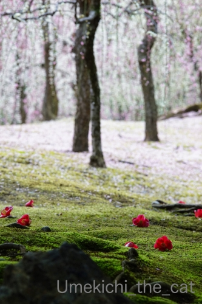
こんな光景。
散り落ちた椿のむこうに広がる枝垂れ梅の木々。
桜に負けない華やかな梅、堪能しました！！
例年梅が咲いている間は大混雑と聞きますが
この日は付属の駐車場もガラガラ。
庭園内はそれなりに人はいましたが静かに梅を鑑賞できましたよ。
ちょっと悩みましたがこの地区でもう一ヶ所行ってみたいところにも向かいました。
もしかしてあそこ？と思った方、多分正解。
伏見区といえばあそこ、ですよね。
次回に続きます！

カフェオレ色の梅吉

梅吉 2023年8月10日 永眠


梅吉と出会った譲渡会

犬猫の理由なき殺処分ゼロ
妄想広告
UMEKICHI 光

爆発的に早い！
時々攻撃的！
Thanks to Mr.Boss365
爆発的に早い！
時々攻撃的！
Thanks to Mr.Boss365

枝垂れ梅美しいですねー。
苔も綺麗だしそこに点々と落ちている椿も良いです~。素晴らしいわぁ。
by zombiekong (2020-03-02 00:45)
コロナ君のおかげで
良い景色をゆっくり楽しめたのかな？＾＾
by ぽちの輔 (2020-03-02 06:27)
そうでなくても朝はもう少し寝てたいなぁって思う（仕事の日限定w）のに
こんな気持ちよさそうな二度寝を見させられると一緒に寝たくなります=(^.^)=
夫さんが気をつけてても梅吉さんがWEB会議に参加する可能性は高いかと＾＾
だってきっと梅吉さんは「おとうはんの会社の人にちゃんと挨拶しなければ！」って
思ってそうw
by ニッキー (2020-03-02 07:06)
昨日、ちょっと繁華街を歩きましたが、
かなり人が少なくてびっくりでした。
今回のコロナ騒ぎで日本企業のテレワークが
一気に浸透しそうですけど、
オフィス家具売ってる弊社としては困ります！(^_^;)
by よーちゃん (2020-03-02 07:17)
梅吉さんと朝寝、良いじゃないですか～。
一緒に朝寝してくれる猫さん希望！(笑)
ほんと、あちこち自粛ムードで静かですねぇ。
在宅でのお仕事はねぇ、ほんと、難しい面もありますね。裁量労働だったら、自分でメリハリつけて集中して片付ければ良いだけですが、時間管理だと、メリハリつけたところで、ON/OFFがつけにくいというか、OFF時に休まらない感じがしちゃって。私だけかなぁ。
枝垂れ梅、美しい！私が行ったところは、枝垂れ梅の本数が少ないのですが、ここはスゴイ！壮観ですねぇ～。散っているところがまた良いです。
by ChatBleu (2020-03-02 09:04)
朝寝したくなりますねぇ～(#^.^#)
ｗｅｂ会議に梅吉さんが参加（笑
和やかな会議になりそうです♪
by きぃ (2020-03-02 09:13)
テレワークだとダラダラと仕事をしてしまうので夜まで逆に仕事したりしちゃいますね。
メリハリが難しい。
by ma2ma2 (2020-03-02 09:56)
＞とりあえずお昼にビールは飲まない様にって釘は刺しておきました
ここ、大爆笑！！
うんうん。ついついビールをぷしゅってしちゃいそうだから気をつけてね。
ちぃさんもゴハン作り頑張って〜^^;
テレワーク、梅吉くんはばんばん登場してもらいましょうよ！！
そしてだんなさまの会社のアイドルキャットになろう！(笑)
城南宮って初めて。
枝垂れ梅が幽玄だね。
by リュカ (2020-03-02 10:15)
ｗｅｂ会議に梅吉さんが参加！想像したら大受けしてしまいました(^^;)
今日から県内の学校が一斉休校になりましたが、我が職場は独身や高齢者が多いので殆ど関係ないかって感じですが、行かないと仕事にならないのでいざとなったときは困ります・・・。
by kou (2020-03-02 10:54)
城南宮もいくつかのブロ友さんのところでレポを見て
枝垂れ梅がそりゃ～もう枝垂れ放題で美しいなぁと思っておりました。
ど牛手打ちの相方君はこんなお花のいい時期に免停なんだｗ！でございます。
群がるカメラを構えた方々ご主人はどれだろう・・・（^^
ウェブ会議に梅吉さん登場してびしっと仕切ってもらいましょう♪
毎日3食作るって大変ですよねを買い物も一緒に手伝ってもらいましょう。
by marimo (2020-03-02 12:09)
おとーさんがお家にいて梅吉さんは嬉しいでしょう(#^^#)
在宅勤務は確かに昼ビール要注意。昼寝してしまって気づいたら夕方なんてことになりそう。WEB会議も家の中の音や物が変に参加しないよう気を付けないとですね^^;
梅吉さんはみんな大歓迎だと思いますよ！！
相方も在宅OKになったようなのですが今日はいつも通り出かけました。
城南宮の幽玄の世界。美しいですね～。
電車でのお出かけを躊躇してしまって結局どこへも出かけなかったのでお写真堪能させていただいています♪
by ゆきち (2020-03-02 12:23)
こんにちは。
梅吉君の仕草（笑）癒されれる平和な風景です。
小生は、猫が腰を下ろす時が萌えポイントです（笑）
お洒落な傘です。梅吉君の見つめる表情、撮影に耐えている感じ？
危険回避の「２週間テレワーク」良かったですね。
「お昼にビール」はあるあるです。企業収益？が心配になります（笑）
是非、梅吉君「web会議」に登場して欲しいです（爆）
カメラ位置が重要。お片付け急いで下さい！！
食事用意は大変ですが、楽しんで下さい。
「カーシェアを利用」良いアイデアです。
枝垂れ梅と苔の写真、素晴らしい構図です。
群がるカメラ（笑）に驚きですが、落ちた椿写真を見ると納得ですね。
ピンチはチャンスのお手本の行動。見習いたいです！？(=^･ｪ･^=)
by Boss365 (2020-03-02 13:55)
朝寝～と、朝酒、朝湯があればもっといいが？（ﾟ□ﾟ）小原庄助さんかっ
枝垂れ梅が見事だね～
by 英ちゃん (2020-03-02 15:03)
梅吉さん、いっしょに朝寝？いいですね～。
うちは昼寝なら、よくしてました^^
テレワーク、梅吉さん参加！楽しくていいじゃないですか。明るい気分で免疫力上げましょう。
お昼ご飯が悩ましい？
スーパーで食べ物が早く品薄になるので、これも気を付けないと^^;
しだれ梅、麗しい～！
苔も見事ですねえ…^^
by sana (2020-03-02 19:46)
京都素晴らしいですねぇ
良い写真だなぁ
by (。・_・。)２ｋ (2020-03-02 21:04)
おっとさんがテレワークですか。
おうちの上司の方（＝梅吉さん）の監視が厳しそう。^^;
枝垂れ梅、いいお写真ですね！！
by yes_hama (2020-03-02 21:37)
娘の勤務先では『在宅勤務』もできるようですが、手続きが面倒なのでと、
11時から16時まで勤務しています。
早く帰宅するので、早めの夕食です。
私の中で帰宅⇨すぐ夕食というように
思い込んでいるようです（笑）
早く片付くのは楽で良いです。
降るように咲く枝垂れ梅、凄いですね。
京都、近いのに中々行かなくなりました。
今が行き時、その気持ちとっても分かります。
普段は外国人だらけの京都ですから、
スッキリでしょう。
ちぃさんのおっとさん、
写真の角度から見つけた！なんて（笑）
華やかな写真ですね〜素敵です。
by kiki (2020-03-02 21:46)
朝の太陽が恋しい季節ですね。
しだれ梅、綺麗ですね〜。
お花見したいわ！
by nachic (2020-03-03 01:15)
することないから取り敢えず寝よ♪
ぽかぽかが気持ちいいと仕方ないです・・・
でも梅吉さんのお尻がテレビに反射して丸見えですよ！
城南宮の枝垂れ梅とってもきれい～
写真家が夢中になるのも分かるような気がします(^^♪
伏見区でも１つと言えば伏見稲荷大社ですが、
まさかそんな単純な答えではないですね(笑)
by yamatonosuke (2020-03-03 01:34)
おお、梅、きれいですね～。色が優しい。
椿との取り合わせも素敵。
by ふにゃいの (2020-03-04 00:12)
新幹線に乗らずに京都に行けるの、いいなあ～。
名所の近くに住んでいる方は、今年はゆっくり鑑賞
できる貴重な機会になりそうですね。最後のお写真、
ポストカードにして売れそうな美しさ！(@^▽^@)
by うりくま (2020-03-04 21:50)
そうですね^^テレワークは全て自己管理が徹底してないと、大変です^^
by ニコニコファイト (2020-03-05 06:51)
一緒に朝寝したーーーいＯ(≧▽≦)Ｏ
テレワーク、いろんな会社が推奨していますね。
大阪で感染者があんなに少ないのはおかしいですもん。
きっと調べていないだけです！！
通勤電車とか、何かと人と接触しますから時差出勤や
テレワークにするほうがいいと思います。
うちの会社も取り入れていますが、web会議はイヤだなぁ。
ちゃんと姿形を整えておかないと「誰？」って言われたら
困りますからーー(爆w)ミュウも絶対参加しちゃうだろし(笑)
しだれ梅、ステキですねーーヾ(≧∇≦*)〃ヾ(*≧∇≦)〃
一番最後の写真はプロの作品みたいですよ☆⌒d(*＾ｰﾟ)b
by カトリーヌ (2020-03-05 11:24)